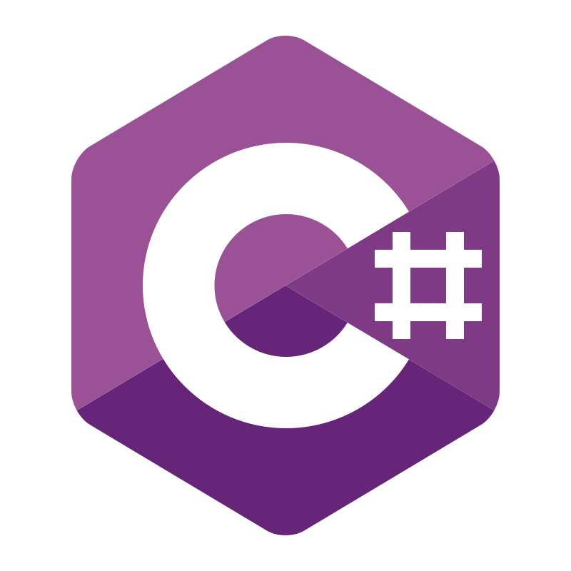
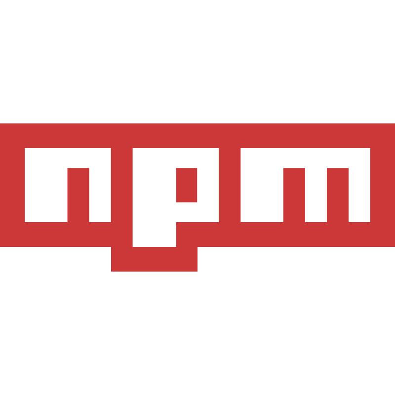
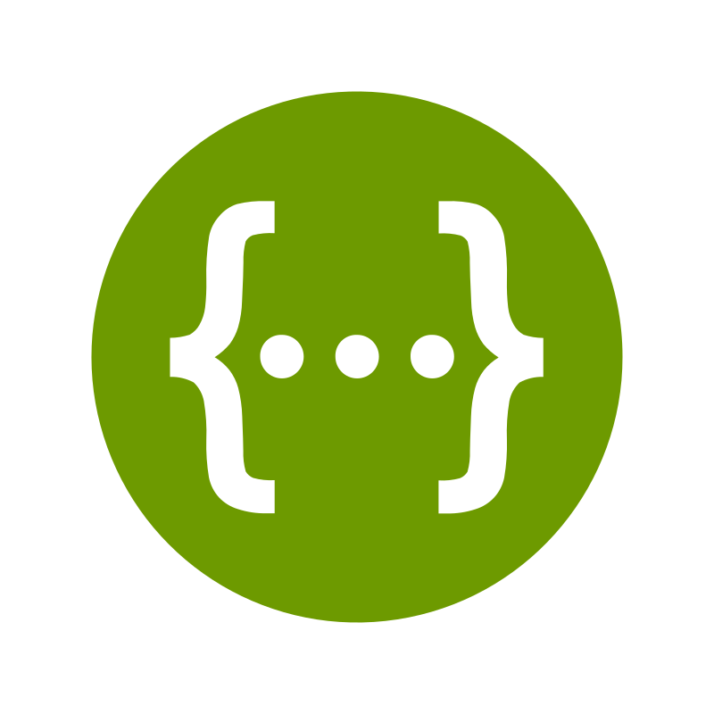
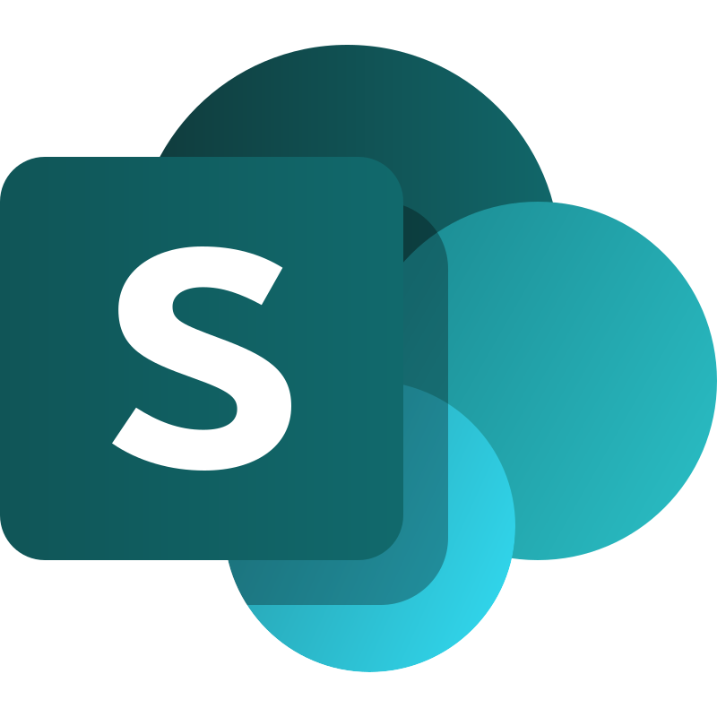

Portafolio
Compilo evidencias y proyectos en calidad (QA), datos/automatización y desarrollo web. Base: Ingeniería en Sistemas.
Quality / QA
API Testing
Data & Automation
Web & UX
Enfoque
- QA manual y API (casos, severidad, trazabilidad)
- Validación de reglas de negocio y datos
- Automatización y digitalización de reportes
- Web / UX: consistencia visual y comportamiento
Stack tecnológico & herramientas
Lenguajes, QA, datos, UX y herramientas de ingeniería.
Lenguajes & Desarrollo






QA & Testing



Datos & Automatización




UX & Diseño


Control de versiones & Dev Tools


Otras herramientas
*Si algún icono no lo tienes aún, puedes dejarlo pendiente: no rompe la página.*
Proyectos
Filtra por categoría.
Skills
Resumen rápido de fortalezas técnicas.
Quality / QA
- Casos de prueba, severidad y trazabilidad
- Pruebas exploratorias y de regresión
- Reporte de defectos con evidencia clara
API Testing
- Postman (colecciones, variables, entornos)
- Swagger / ApiDoc (lectura de endpoints)
- Validación de códigos, payloads y lógica de negocio
Data & Web
- Power BI / Power Query / Excel
- HTML / CSS / JS
- Git / GitHub
Contacto
Si quieres evidencias específicas (docs/colecciones/capturas), te las comparto por link.